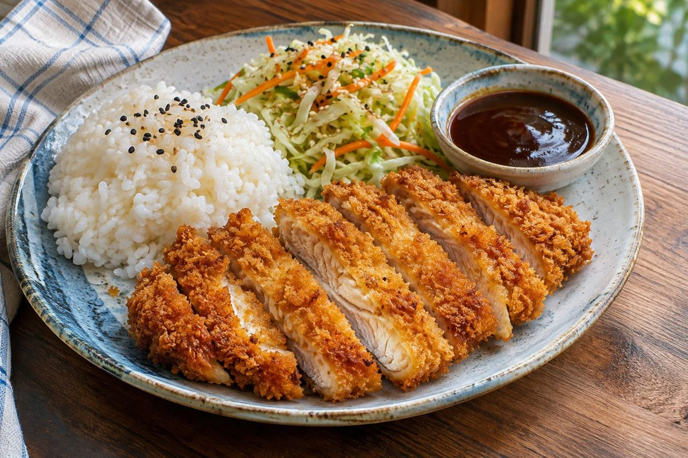

Japanese · Dinner · Serves 4 · 40 min total
Chicken Katsu with Rice and Sesame Slaw

Ingredient amounts are estimates when scaled. Original recipe and AnyList import remain unchanged.
Ingredients
- 2 lb boneless skinless chicken breasts, sliced into 4 thin cutlets
- 1⅓ tsp kosher salt, divided, plus to taste
- ⅔ tsp black pepper
- ⅔ cup all-purpose flour
- 3 eggs, beaten
- 2 cups panko breadcrumbs
- ½ cup neutral oil, for shallow frying, plus more as needed
- 1⅓ cups dry white rice
- Water, according to rice package
- 4 cups shredded green cabbage
- 1–2 large carrots, shredded
- 2 Tbsp plus 2 tsp rice vinegar
- 2⅔ tsp toasted sesame oil
- 2⅔ tsp sugar, divided
- 1⅓ tsp sesame seeds
- ¼ cup ketchup
- 2 Tbsp Worcestershire sauce
- 2⅔ tsp soy sauce
Instructions
- Start rice according to package directions. Toss cabbage and carrot with rice vinegar, sesame oil, 1⅓ tsp sugar, sesame seeds and a pinch of salt. Mix ketchup, Worcestershire sauce, soy sauce and remaining 1⅓ tsp sugar for the katsu sauce.
- Pound cutlets to an even ½-inch thickness. Season with salt and pepper. Put flour, beaten eggs and panko in separate shallow dishes. Coat chicken in flour, then egg, then panko, pressing gently to adhere.
- Heat a ¼-inch layer of neutral oil in a wide skillet over medium heat to about 350°F. Fry cutlets in batches, about 3–5 minutes per side, adjusting heat to avoid burning, until golden and the center of each reaches 165°F. Add oil between batches if needed.
- Drain on a wire rack, rest 3 minutes and slice. Serve with rice, slaw and katsu sauce on the side. Offer hot sauce separately.